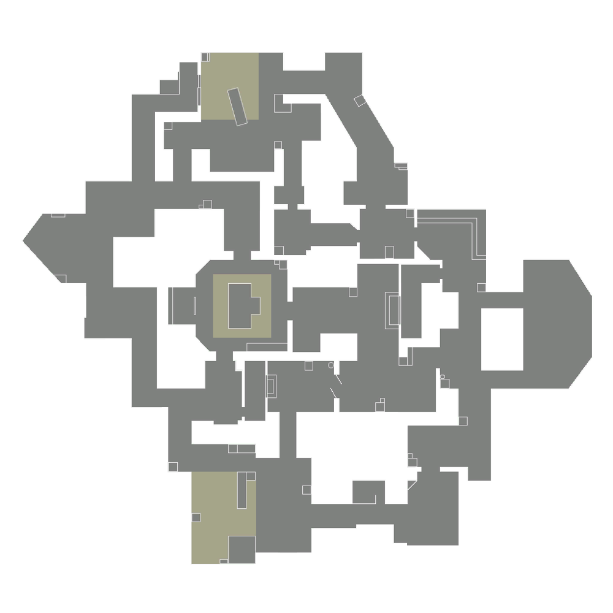
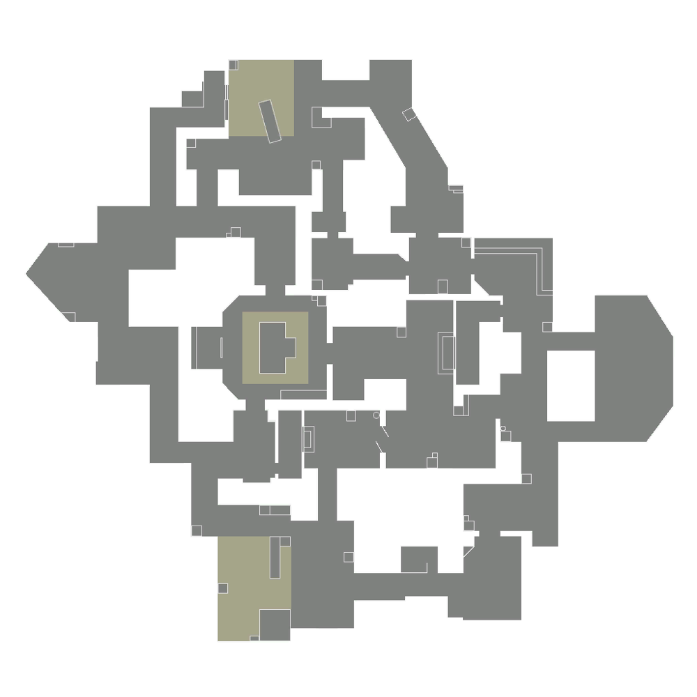

SPLIT
If you want to go far, you'll have to go up. A pair of sites split by an elevated center allows for rapid movement using two rope ascenders. Each site is built with a looming tower vital for control. Remember to watch above before it all blows sky-high — Official description

ASCENT
Ascent is a map set in Italy that features a large, open middle area that both teams can skirmish over. Mid is a playground for diverse ability use and successfully controlling the area opens additional routes for Attackers to both Spike sites. The map's 'unique' features include mechanical doors leading into sites. Each site has one door (A Link for A and Market for B) that is opened at the start of each round. Players can use a switch on the site side of the door (Next to the door on A and on a table in Toolshed on B) to close or open the door. These doors are impenetrable while closed but have 500 HP, allowing players to damage and eventually destroy them. Once destroyed, the doorway remains permanently open for the rest of the round. The two walls separating Courtyard from Link also have a destructible panel each to cover them. Whilst intact, they absorb damage and cannot be penetrated by gunfire. The panels however have 400 HP each and can be damaged, with colored indicators on them implying how much health they have left (starts blue, then turns yellow and then red as they take more damage). They can eventually be destroyed to allow players to wallbang through these walls for the rest of the round.
 

HAVEN
Haven's unique features include an additional third spike site. This does not affect the number of ultimate orbs on the map; Haven's two ultimate orbs are present in A Long and C Long (Dragon). The doors at Mid also have destructible panels covering them. Whilst intact, they absorb damage and cannot be penetrated by gunfire. The panels however have 400 HP each and can be damaged, with colored indicators on them implying how much health they have left (starts blue, then turns yellow and then red as they take more damage). They can eventually be destroyed to allow players to wallbang through these doors for the rest of the round.


PEARL
Pearl is a two-site three-lane map. Following on from the release of more strategically complex maps like Icebox, Breeze, and Fracture, Pearl is designed as a more traditional map. As a result, Pearl is the first map to be released that does not contain any dynamic elements or mechanical hooks for gameplay.

BIND
Bind's 'unique' feature is that it doesn't contain a mid section, instead having two one-way teleporters. One takes players from A Short to B Short and the other takes players from B Long to A Lobby. Players use teleporters by walking into the section of wall taken up by the teleport entrance. They will then instantly arrive in a small exit room which players leave by walking towards the door out of the room. This door is closed by default and can only be opened by players inside the exit room walking up to it, at which point they will open automatically. Players outside the exit room cannot open these doors, but they can be penetrated by gunfire. Other objects can also be sent through teleporters if they come into contact with the teleporter entrance. They will maintain any velocity they had before being teleported and can open the doors and leave the exit room should they travel far enough to trigger the door sensor. Objects include abilities, the spike, and dropped weapons. Whenever a teleporter is used by an agent or an object, all players on the map will be given an audio cue.


FRACTURE
Fracture's unique design splits up the map into four neutral quadrants; four central areas between the quadrants that contain the sites and Attacker spawns, and a central zone where Defenders spawn. On Round Start, Defenders can access the sites, which are on opposite sides of the map. Attackers all spawn in one area, but can reach the other side by using the cross-map ziplines that take them underneath Defender Spawn. During the Buy Phase, Defenders are unable to hear Attackers using the ziplines. Each quadrant contains one orb, meaning Fracture has a total of four orbs as opposed to the usual total of two orbs that are present on most other maps. A Hall contains an automatic door that works similarly to the exit room doors for Bind's teleporters, as it will instantly open once a player gets close enough, making a loud audio cue as it does, and will also open for any abilities thrown towards it. This door on Fracture however will also open for entities on both sides of the door. Ziplines Fracture features two parallel one-way ziplines that bisect the map. These ziplines do not act like ziplines found on other maps due to them crossing over an out-of-bounds region, and so they have special rules to their interactions:
Upon attaching, the player will automatically move across the zipline at full speed
- Whilst attached, players cannot:
- Change directions
- Use abilities
- Detach
- Stop (although you can still slow yourself down holding Shift)
- If the spike carrier drops the spike or gets killed whilst using the ziplines, the spike will respawn on the closer side of the zipline.

BREEZE
Breeze's 'unique' features are present on the A side of the map, mostly to do with A Hall. There are ropes to get players into A Hall. On the defending side players can use the rope at the back of A Site to get onto Bridge and into Hall, and on the attacking side players can use the rope in A Lobby to get into Hall. A Site has an impenetrable, indestructible mechanical door leading into A Hall that can be opened and closed using switches on either side. The door is closed at the start of each round. Towards the Attacker side of Hall is a one-way chute (also known as a 'vent') that can be used to go to Mid.


ICEBOX
Icebox is the first map to introduce horizontal ziplines, seen at the A Site. Each Icebox site is a complex combat space that features plenty of cover and verticality. This map emphasizes skirmishes, sharp aim, and adaptive play. It is also the first map where the plant site has different levels of elevation. Both sites contain nests that players can get into using ropes and then plant the spike on the nest floor.